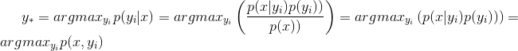
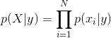
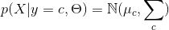

20180330_生成式模型 VS 判别式模型
1- 判别式模型： 只有一个模型，判别(数据输出量)的模型， 如SVM，决策树模型
生成式模型： 有多个模型, 生成（数据分布）的模型，如朴素贝叶斯
2- 生成模型更一般更普适。不过判别模型更直接，更简单
由生成式模型可以得到判别式模型，但由判别式模型得不到生成式模型
3- 生成式模型要对类条件密度(class conditional density)p(x|yi)进行建模, P(x|C) or p(x|yi)
而判别式模型只需要对类后验密度(class-posterior density)进行建模, 前者通常会比后者要复杂, 更难以建模 P(Ci|x)

1- 摘要
判别式模型，就是只有一个模型，你把测试用例往里面一丢，label就出来了，如SVM。生成式模型，有多个模型(一般有多少类就有多少个)，你得把测试用例分别丢到各个模型里面，最后比较其结果，选择最优的作为label，如朴素贝叶斯。本文将从生成式模型与判别式模型的概念，适用环境以及具体模型三个方面分析比较这两个模型，并在最后对列出模型范例，进行范例比较。
2- 基本概念
- 生成模型，就是生成(数据的分布)的模型；
- 判别模型，就是判别(数据输出量)的模型。
3- 适用环境
更进一步，从结果角度，两种模型都能给你 输出量(label 或 y etc.)。
- 但，生成模型的处理过程会告诉你关于数据的一些统计信息(p(x|y) 分布 etc.)，更接近于统计学；
- 而 判别模型则是通过一系列处理得到结果，这个结果可能是概率的或不是，这个并不改变他是不是判别的。
- 如，决策树的 if then 说不是这个就是那个(而很多属性都是有分布的)，明显是一种 判别嘛；
- 而朴素贝叶斯说，p( cancer , fat ) = x% etc.，模型 生成 了一个分布给你了，即使你没意识到/没用到，只用到 p( cancer | fat ) = y% 这个最终的判别。
4- 模型分类
更进一步，可以再理解一下： 生成式模型
- 朴素贝叶斯
- K近邻(KNN)
- 混合高斯模型
- 隐马尔科夫模型(HMM)
- 贝叶斯网络
- Sigmoid Belief Networks
- 马尔科夫随机场(Markov Random Fields)
- 深度信念网络(DBN)
判别式模型
- 线性回归(Linear Regression)
- 逻辑斯蒂回归(Logistic Regression)
- 神经网络(NN)
- 支持向量机(SVM)
- 高斯过程(Gaussian Process)
- 条件随机场(CRF)
- CART(Classification and Regression Tree)
【模型范例】 假设你现在有一个分类问题，x是特征，y是类标记。用生成模型学习一个联合概率分布P(x，y)，而用判别模型学习一个条件概率分布P(y|x)。用一个简单的例子来说明这个这个问题。假设x就是两个(1或2)，y有两类(0或1)，有如下如下样本(1，0)、(1，0)、(1，1)、(2，1) 则 学习到的联合概率分布(生成模型)如下：
| x\y | 0 | 1 |
|---|---|---|
| 1 | 1/2 | 1/4 |
| 2 | 0 | 1/4 |
而学习到的条件概率分布（判别模型）如下：
| 0 | 1 | |
|---|---|---|
| 1 | 2/3 | 1/3 |
| 2 | 0 | 1 |
在实际分类问题中，判别模型可以直接用来判断特征的类别情况，而生成模型，需要加上贝耶斯法则，然后应用到分类中。但是，生成模型的概率分布可以还有其他应用，就是说生成模型更一般更普适。不过判别模型更直接，更简单。两种方法目前交叉较多。由生成式模型可以得到判别式模型，但由判别式模型得不到生成式模型。
关于生成式模型和判别式模型的优缺点的具体分析。
5- 生成式模型的数学表达建模
生成式模型(generative model)会对x和y的联合分布p(x,y)进行建模,然后通过贝叶斯公式来求得p(y|x), 最后选取使得p(y|x)最大的yi. 具体地,

判别式模型(discriminative model)则会直接对p(y|x)进行建模.
关于二者之间的优劣有大量的讨论. SVM的发明者Vapnik声称"one should solve the (classification) problem directly and never solve a more general problem as an intermediate step [such as modeling p(x|y)]", 但是, 最近Deep Learning大行其道, 其代表性算法DBN就是生成式模型. 通常来说, 因为生成式模型要对类条件密度(class conditional density)p(x|yi)进行建模, 而判别式模型只需要对类后验密度(class-posterior density)进行建模, 前者通常会比后者要复杂, 更难以建模, 如下图所示.

6- 对比
下面简单比较下生成式模型和判别式模型的优缺点.
- 一般来说, 生成式模型都会对数据的分布做一定的假设, 比如朴素贝叶斯会假设在给定yy的情况下各个特征之间是条件独立的:

GDA会假设

当数据满足这些假设时, 生成式模型通常需要**较少的数据就能取得不错的效果**, 但是当这些假设不成立时, 判别式模型会得到更好的效果.
-
生成式模型最终得到的错误率会比判别式模型高, 但是其需要更少的训练样本就可以使错误率收敛[限于Genarative-Discriminative Pair, 详见[2]].
-
生成式模型更容易拟合, 比如在朴素贝叶斯中只需要计下数就可以, 而判别式模型通常都需要解决凸优化问题.
-
当添加新的类别时, 生成式模型不需要全部重新训练, 只需要计算新的类别
ynew和x的联合分布p(ynew,x)即可, 而判别式模型则需要全部重新训练. -
生成式模型可以更好地利用无标签数据(比如DBN), 而判别式模型不可以.
-
生成式模型可以生成
x, 因为判别式模型是对p(x,y)进行建模, 这点在DBN的CD算法中中也有体现, 而判别式模型不可以生成x. -
判别式模型可以对输入数据
x进行预处理, 使用ϕ(x)来代替x, 如下图所示, 而生成式模型不是很方便进行替换.

左图中直接使用x进行逻辑斯蒂回归, 而右图则使用径向基核对x进行变换后再使用逻辑斯蒂回归.
7- 参考文献:
[1]. Kevin P. Murphy. Machine Learning: A Probabilistic Perspective, Chapter 8.6, Page267-271.
[2]. Andrew Y. Ng, Micheal I. Jordan. On Discrimintive vs. Generative Classifiers: A comparison of logistic regression and naive Bayes.
[3]. Stack Overflow: What is the difference between a Generative and Discriminative Algorithm?